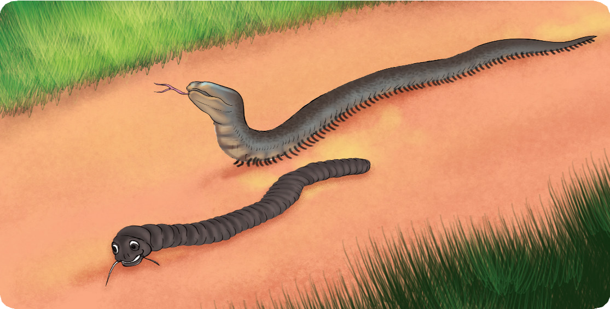

Soma hadithi ifuatayo, kisha jibu maswali yanayofuata.
Jongoo na Nyoka
Hapo zamani za kale, Jongoo na Nyoka walikuwa marafiki. Jongoo, katika maumbile yake alijaliwa kuwa na macho lakini hakuwa na miguu. Tofauti na
Jongoo, Nyoka alijaliwa kuwa na miguu lakini hakuwa na macho. Marafiki hawa walifanya kazi bega kwa bega. Urafiki wao wa dhati ulidhihirisha kuwa akufaaye kwa dhiki ndiye rafiki wa kweli. Jongoo na Nyoka walikuwa na rafiki yao aliyeitwa Mwewe. Siku moja, Jongoo na Nyoka walienda kumtembelea Mwewe. Nyoka alitembea polepole japokuwa alikuwa na miguu mingi. Alifanya hivyo kwa kuogopa kujikwaa. Jongoo alikuwa anatambaa harakaharaka kwa sababu alikuwa anaona kila kitu. Nyoka alimtahadharisha akisema, “Haraka haraka haina baraka.” Jongoo hakusikiliza. Aliendelea kwenda kwa mwendo wa kasi. Kwa bahati mbaya, aligonga jiwe akaanguka chini kwa kishindo. Nyoka alimsogelea na kumsaidia kuinuka. Baada ya tukio hilo, waliendelea na safari yao kwa umoja na tahadhari zaidi.

Hatimaye, walifika nyumbani kwa Mwewe. Walikuta ndege wengi wamekusanyika wakiwa wanalia. Nyoka alisikia sauti lakini hakuona kitu chochote. Alitamani sana kuwa na macho ili aone kinachoendelea. Aliamua kuuliza nini kimetokea. Mazungumzo yao yalikuwa kama ifuatavyo:
Nyoka na Jongoo walishitushwa na taarifa hiyo. Waliingia ndani; wakamkuta Mwewe ameshika tama kwa huzuni kuu. Uso wake ulionesha uchungu wa kumpoteza mwanawe mpendwa. Walimfariji kwa kumkumbatia huku machozi yakiwalengalenga. Baada ya kimya cha huzuni, Nyoka alimfariji rafiki yao, “Pole